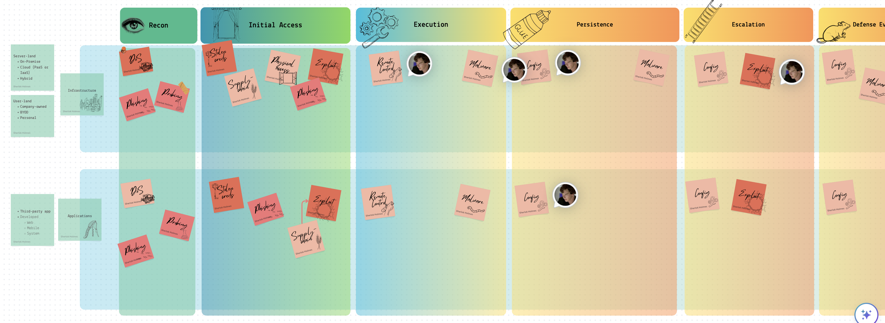

🥷🏼 IR Methodology
For the most relevant scenarios, keeping playbooks and runbooks at your disposal is crucial. This will help you stay less stressed and be prepared for various outcomes. I have created a high-level overview of potential playbooks based on the MITRE ATTACK matrix, which includes guidelines for detection, investigation, and cleanup techniques. Runbooks, on the other hand, are highly detailed and technical instructions, such as “How to reset an account password” or “How to change an AWS EC2 inline policy.” One runbook can be referred to by several playbooks, which is perfectly fine. Consider playbooks as constructors with a relatively unique plan and runbooks as the specific steps linked to some or all of the described plan’s stages. Below is a part of the table I have mentioned above.

Following the MITRE matrix, I have roughly divided the content into two different realms: infrastructure and applications. Each sticker represents two things simultaneously:
- 📘 It’s a playbook that needs to be followed if an incident occurs.
- ❓ It answers a question like “How can the adversary get an initial foothold in the system?” The answer would differ for each realm.
Some playbooks have arrows pointing to other playbooks within one cell. This indicates that an investigation of a particular event might lead to another playbook. For example, while investigating a possibility that suggests a vulnerability in a system within the infrastructure was exploited, we might discover that the exposure was not in our system but in a vendor’s system. This could lead to the investigation shifting to a different playbook more applicable to the vendor’s system.
I am working on a framework (MITRE + the above table + Jupyter) for companies to establish which playbooks should be prioritised and developed. The way to go would be as follows:
- Define the infrastructure.
- Go through the relevant MITRE matrix to understand potential risks.
- Profile the potential adversary and align this profile with the MITRE matrix.
- Using the table above, define playbooks of the highest priority.
- In each playbook, describe the detection, investigation and cleanup flow for the most relevant TTPs.
- Ensure a runbook provides technical details (links, scripts, etc.) for each playbook.
Detection and Analysis (SANS Identification)
Lots of systems can be used to monitor the network and host for malicious activity. These are IDS, IPS, firewalls, AV, SIEM (Security Information and Event Management solutions, SIM + SEM), IR frameworks, threat intelligence etc. However, the employee might report the incident (for example, receiving a suspicious email) or by a third party (data exfiltrated seen in the dark net). Before it is confirmed to be accurate or the result of malicious intent, it’s called an event.
Precursors❓ - signs that the incident may occur in the future. For example, logs show that a vulnerability scanner was used. Or a vulnerability was found in some software used by the company.
Indicators 🚨 - signs that an incident has occurred or is occurring. Malware detected by an anti-virus program, configurations changed, multiple failed logins etc.
Several techniques help confirm the incident. See the Investigation -> Methodology section for more details.
- Frequency analysis. Something that is outstandingly rare across systems might be malicious.
- Average vs Evil behaviour. You know what’s considered normal for the given system/user, and something unusual is a primary suspect for further analysis.
- IoC. Indicators of compromise, like some virus hashes or file extensions used by a known crypto malware.
- IoA or pattern analysis. Indicators of attack. Depending on the vulnerability/attack in place, these would be of some particular pattern. For example, you see some string like
<script>alert(1)</script>- it’s probably an XSS attempt.
After the incident is confirmed, you initiate an investigation.
📝 I found it quite hard to separate incident response and digital forensics articles from one another. For now, I see the incident response as a more general process that could require a more thorough examination (digital forensics) but not necessarily. As I see it, we have an event and start the IR process to determine whether it’s malicious. Identify compromised hosts and map the artefacts to the ATCK MITRE framework. Then, to fully contain and remediate the incident, we call for DF, trying to analyse malware, analyse the registry on Windows, recover data from unallocated space, etc., to reconstruct the whole picture in detail. So, roughly speaking, IR is about sketching, and DF is about more information.
Common Malicious Activity, Detection and Countermeasures
Mapping. Attackers must first collect information about the target system: ping, nmap. Countermeasures:
- record traffic
- Look for suspicious activity.
- Use a host scanner and keep track of all the PCs within your network. A new PC should trigger an alert.
Packet Sniffing. An attacker may perform (or try to achieve) traffic sniffing. It is possible in the following cases: Broadcasting, promiscuous NIC, and if the traffic is unencrypted. Countermeasures:
- Periodically check whether the NICs of the hosts are in promiscuous mode.
- We switched Ethernet (1 host per segment of broadcast media).
IP-spoofing. Can generate “raw” IP packets, putting any value as a source IP. The receiver won’t know that the other party is spoofed. Countermeasures:
DoS. Countermeasures:
- Filter out flooded packets (e.g. SYN) before they reach the host.
- traceback to the source of floods
🎣 Phishing. Spear phishing - targeted attack on specific users or groups of users. Whaling - spear phishing for high executive managers. Strategies:
- They claim they’ve seen numerous failed login attempts or other suspicious activity.
- They claim that there is some problem with your account or payment method.
- Confirm some personal information.
- Include a fake invoice.
- Click on a link to make a payment.
- You are eligible for a government refund.
- Coupon for free stuff.
How to detect it?
- Suspicious sender’s address.
- Generic signature and greetings.
- They spoofed hyperlinks and websites.
- Spelling and layout.
- Suspicious attachment.
PoS. Most of the malware is equipped with a backdoor and C&C features. The cardholder’s data is decrypted in RAM; that’s why this type of malware sniffs the RAM (RAM scraping). Countermeasures:
- Monitor the network for changes.
- Good encryption
- Limit the host that communicates with PoS.
- chip-card-enabled PoS terminals
- Employee screening and training
Injections. MongoDB. $where is interpreted as JS. DoS: $where="d=new Date; do {c=new Date;} while {c-d<10000};", XPath. 'or 1=1 or '1'='1, LDAP.*)(cn=))(|cn=*, SQL or 1=1-- etc. The best practice is to allow listing allowed and needed characters.
- Preventing OS injection
- Don’t use OS commands.
- Sanitise input
- Accept, say, ids and lookup.
- Leat prev
- do not run through shell interpreters
- explicit paths
- Preventing SQLi
- prepared statements
- sanitise
- do not expose errors with SQL statements etc
- limit permissions
- stored procedures
- ORM libs (Hibernate)
Common AWS issues The following list is the top ten identified misconfigurations in Amazon EC2 instances and workloads from our data set:
- Unconfigured EC2 instance single-point-of-failure and auto-scaling issue
- S3 logging not enabled
- S3 object versioning is not enabled
- User not configured to use MFA
- User access key not configured with rotation
- IAM policies are attached directly to the user
- Dangerous user-privileged access to S3
- ELB security group allows insecure access to ports or protocols
- IAM access keys unused for 90 days
- Dangerous user-privileged access to RDS
Spillage
If it’s AWS - open up a case with AWS Business Support: report spillage findings and response actions, DoD 5220.
Documentation
This is when you start taking notes for the incident (or event). Current status of the incident, summary, indicators, other related incidents, actions taken by all, a chain of custody*, impact assessment, contacts, list of evidence, comments from incident handlers (IH), next steps to be taken (rebuild the host/upgrade).
How to categorise the incident? Simply put, how bad is that?
- Functional Impact Categories
- None - nothing’s changed.
- Low - the business can still provide critical services, but the efficiency needs to be recovered.
- Medium - O. needs to be able to provide critical services to some users.
- High - O. is no longer able to provide its critical services.
- Information Impact Categories
- None - no info was exfiltrated or compromised.
- Privacy breach - sensitive PII was accessed or exfiltrated.
- Proprietary breach - unclassified proprietary info exfiltrated (PCII).
- Integrity loss - sensitive or proprietary info was changed or deleted.
- Recoverability Effort Categories, TTR - time to recovery
- Regular - TTR is predictable with existing resources.
- Supplemented - TTR is predictable with additional resources.
- Extended - TTR is unpredictable.
- If not recoverable, launch the investigation.
Protected Data
Suppose the GDPR data was leaked - 72 hours to disclose the breach. HIPAA has other time limits.
Containment. Eradication. Recovery.
Containment 📦 aims to stop the bleeding🩸. It’s a critical stage. While during Identification (aka detection and analysis), we confirm that something’s going wrong, this stage is used to see the whole picture, how the breach happened, what damage was already done, which systems are compromised, etc. Quoting SANS:
The goal of containment is to limit damage from the current security incident and prevent further damage. Several steps are necessary to completely mitigate the incident while avoiding the destruction of evidence that may be needed for prosecution.
So, digital forensics can occur anywhere from Analysis (aka Identification) to the Lessons Learned stage. It may not happen, however. For example, a DoS attack may not need this facility.
Choosing a containment strategy:
- ❓ Is there potential damage or theft of resources?
- ❓ Do we need to preserve the evidence for the court/ourselves and make an image of the compromised system?
- ❓ Do we need the service to be available during the investigation?
- ❓ How much time do we have and need?
- ❓What resources are available to implement this strategy?
- ❓ What’s the strategy’s effectiveness (partial or complete containment)?
Below is the checklist to ensure the responder has done their job. These questions can be used in a ticket or IR timesheet, mentioned above in the Documentation section.
- ❓ Who attacked you and why?
- ❓ When and How did it happen?
- ❓ Did this happen because of the poor sec policy and processes?
- ❓ How widespread is the incident?
- ❓ What steps are being taken to determine what happened and prevent it in future?
- ❓ What’s the impact?
- ❓ Was any personally identifiable information leaked?
- ❓ What is the estimated cost of this incident?
The SANS containment process involves:
Short-term containment—limiting damage before the incident worsens, usually by isolating network segments, taking down hacked production servers and routing to failover.
System backup—taking a forensic image of the affected system(s) with tools such as Forensic Tool Kit (FTK) or EnCase, and only then wiping and reimaging the systems. This will preserve evidence from the attack that can be used in court and for further investigation of the incident and lessons learned.
Long-term containment—applying temporary fixes to make it possible to bring production systems back up. The primary focus is removing accounts or backdoors left by attackers on the methods and addressing the root cause—for example, fixing a broken authentication mechanism or patching a vulnerability that led to the attack.
Eradication aims to remove the threat. For example, please remove the malware, and return configs to their normal state. It’s a common mistake of many companies to jump right to this stage without proper prior investigation and containment. In this case, the attacker might still be inside, the vulnerability they used is still unmatched, or the user they social engineered still needs to be informed about this event properly etc. It can turn into a “whack-a-mole” game which is no fun when a company’s reputation and finance 💵 are concerned.
- ❓ Can the problem be isolated? Are all affected isolated?
- ❓ Have the forensic copy been created? For each piece of evidence, keep the info (or chain of custody, even better):
- Identifying information (location, serial, model, hostname, MAC and IP)
- Name, title, and phone of each individual who collected or handled the evidence
- Time and date (+ time zone) of each occurrence of evidence handling
- The location where the evidence was stored
- ❓ Can this system be reimaged and patched?
- ❓ Was all malware removed and the system hardened?
- ❓ What tools will you use to test, monitor and verify that the exact cause no longer compromises the restored systems?
Recovery aims to get the system operational if it goes down or simply back to business as usual if it doesn’t.
Post-Incident Activity (SANS Lessons Learned)
Learn from your experience so you can better respond to future security events. Adjust your playbooks accordingly.
Cloud IR Specifics
If there are any shared resources with other companies that care about security less, you might be in trouble. For example, several companies host their web application on one website.
Cloud IR is easier. Some tools and methods are available ONLY for the Cloud—IR Simulation on AWS.
Automation - https://docs.aws.amazon.com/whitepapers/latest/aws-security-incident-response-guide/automation-1.html
🔬 🧪 DF Methodology
Collection
Evidence collection begins with the first response and arriving at the scene (how weird….). The person collecting the evidence assumes the role of a first responder. Only sometimes are they digital forensic experts. Opponents will try to discredit their work. That’s why it’s essential to use industry-accepted tools and know the digital footprint of these tools (checked every month). Each media type has a separate section under Incident Investigation -> Collection section on this website - https://bakerst221b.com/docs/dfir/investigation/collection/.
There are several important notes to keep in mind:
❗️Document everything. Before anything can be acquired, it needs to be properly documented first. The first responder must record all the findings in the Chain of Custody form.
❗️Take photos and videos before touching anything. These photos/videos need to have proper time-stamping.
❗️Do never make any analysis on the original media! Any analysis and investigation are only performed against a copy.
❗️Make hashes before the acquisition, after and when making copies.
Documentation
Start documenting even before you get to the scene. First, make sure that timestamps are configured on both devices. Take as many photos and videos as possible. Take overall and close-up images. Make sure that all the connections between the devices are photographed clearly. Photograph the evidence in situ (if possible). Identify and assign unique ids to the evidence collected.

Evidence
Expand …
❗️Mind the scope when collecting the evidence. For example, you might not have permission to manage personal devices.
Obvious Physical Evidence. PC, cameras, flash drives, PDAs, removable media, and mobile devices. Mind the chain of custody.
Non-obvious Physical Evidence. Manuals for devices that were not found - look for these devices. Digital media taken with some device that was not found -look for this device: sticky notes or little papers with scrambled letters.
Cloud Evidence.
⚠️ Do not forget the charger!
Evidence Integrity
One of the essential parts is to ensure evidence integrity. Hashing and Chain of Custody (CoC) exist for this purpose. You can always video record all you do on the screen, commenting on every step. Evidence also needs to be transported and stored safely.
Physical
Don’t contaminate the scene itself (try not to be tempted to eat biscuits 🍪 and burgers 🍔 on the stage, however hard that might seem). This means that you should also preserve the physical evidence as well. Don’t touch ANYTHING before the lead investigator says “OK” 👍. Always mind the scope and get it in writing, even if it’s not a criminal case. Do fingerprints need to be collected? DNA?
Package the evidence for transport. Transport the evidence. Store the proof while in possession. Use Faraday bags to avoid remote tampering and anti-static and plastic bags to protect from discharge and moisture. Tape and seal the bags with the evidence.
Digital Integrity
For dead acquisition, it’s pretty simple:
- You calculate the hash of the drive before imaging it.
- Do you imagine the drive?
- You get the hash of the image.
- whenever you copy this image, you get the copy’s hash as well
All of the steps are recorded in the report and the CoC.
For live acquisition, it becomes trickier.
The live system is changing all the time. At all times, keep in mind the Locard’s Exchange Principle. It states that when two entities come into contact, they leave the evidence on each other. For the DF field, the investigator will leave traces of their activity when working with the system. This might even result in overwriting some information. That’s why keeping a profile as low as possible is essential. That’s why you need to know how “noisy” the tool is, how many files it writes to the disk, and how much RAM space it needs. It’s called footprint 🐾. To see how much data is being written to the disk or how much space is occupied in RAM (this overwriting some portion of this RAM), open Task Manager or Activity Monitor to stop etc., whatever tool is working for this OS. Note the “Memory” and “Disk” columns, run the utility and see how heavy the footprint is. For example, Belkasoft RAM Capturer has a ~4Mb footprint for RAM acquisition. Magnet RAM Capturer - colossal footprint. Dumpit - the fastest, the smallest footprint. That’s why tools must be checked and tested regularly before the investigation.
Block any network connection, Bluetooth, while on the scene to avoid remote wiping. Look for running wiping software or kill switches.
Use the latest industry-acceptable hashing algorithms (at least SHA-256). Even though collisions might not be that probable, DF is usually about the court, and if you use MD5, for example, this might be used to discredit your work. The best practice is to use several hashing algorithms (especially when automating the process). If there are arguments around one of the hashing algorithms you’ve been using, you’d always have another one to back up your process sanity.
❗️Sometimes, a tool might produce a different hash. It might be due to a bug in the code. That’s why it’s essential to validate the instruments. It’s always better to use built-in Linux or macOS hashing tools (
shasum, for example). For more examples, see the Tools section.
To prevent battery loss (in case we need the device to be on), keep the device connected to the power supply (for example, portable).
⚠️ Turning off might trigger encryption!
Chain Of Custody
Expand …
❓Where the evidence was found
❓Time and date the evidence was collected
❓Who found the evidence
❓Description of the evidence
❓Make, model, and S/N of device (if applicable)
📝 I think one of the best ways to keep the Chain of Custody is on Google Drive. This way, we have a history of changes and who has made them. Another way would be to use GitHub.
Identify the evidence
Assign IDs for each piece of evidence. For example, for a flash drive, it would look like this—FD (flash drive) + its sequence number within this case + case number. Subsequent images of these devices will have the same number + copy sequence number.
Example: A USB Flash drive was found on the scene during case study 0124. It was the first USB drive found yet. This device was assigned the number FD-01-0124. Then we made two bit-by-bit copies of this drive, ids assigned: FD-01-0124-01 and FD-01-0124-02, respectively.
Report
Expand …
Keep track of all the steps taken, the reason for these steps and the outcome. Document the physical condition (mouse to left or right as the owner is a lefty or a righty), applications running, and keep audio notes. Make photos and videos, and make notes. Maintain the Chain of Custody at all times.
Reports are often read by those who could be more techie. Besides, you would want your information usable at court, should the need arise.
This is also crucial to share the findings, IOCs and info about threat actors with the threat-hunting team 🔪 .
The final report should contain the following:
- Case summary (who requested, who’s in charge, principles involved, when did the incident occur, when was this report filed, what allegedly happened, copies of all legal authorisations to proceed);
- Authorisations (original request in writing, warrants, subpoenas, written permissions);
- procedural docs (inventory of items examined and chain of custody for each, tools used, a timeline of procedures, list of people performing these procedures, hashed before and after);
- Case notes (all logs extracted from the target system and from the forensic tools, a diagram of the network where investigation occurred (sometimes));
- What physical evidence was collected (videos, pics, copies of docs, interview transcripts);
- Conclusion (ties altogether, supports or refuses the original claim, does NOT prove guilt/innocence).
Make electronic copies of the report. An archive copy is maintained by the team—DVDs for distribution. Copies of written docs are filed. A summary report is provided along with timelines and written + electronic docs.
Photos And Videos
First, make sure that timestamps are configured on both devices. Take as many photos and videos as possible. Take overall and close-up images. Make sure that all the connections between the devices are photographed clearly. Photograph the evidence in situ (if possible).
Examination and Analysis
Art supersedes science. Know what garbage is. Unexpected places. Pay attention to exculpatory (proving innocence) data.
❗️ Correlate data with other independent sources. Some data might have been tampered with, and you should try to find other evidence that describes the same data. For example, timestamps can be easily changed. Therefore, try to find network or login events to correlate them.
Bypassing controls (if PIN protected, data encrypted, ACL, compression). There will be lots of data, and only some are relevant. In most cases, NSRL file data is used to eliminate known files, such as operating system and application files, during criminal forensic investigations. This reduces the number of files which must be manually examined and thus increases the efficiency of the investigation. See here. Autopsy uses this list.
I am testing computer tools. Video analytics here and photo here. And about NIST research in cloud forensics here.
About SIM forensics as well here.
References
Expand…
[1] IBM course
[2] Mac IR
[3] NIST vs SANS IR frameworks
[4] Documentation is to Incident Response as an Air Tank is to Scuba Diving
[5] Incident Response SANS: The 6 Steps in Depth
[6] IR in the Cloud, SANS
[1] Digital Archaeology LiveLessons (Video Training), Safari by [Michael W Graves](https://learning.oreilly.com/search?query=author%3A"Michael W Graves"&sort=relevance&highlight=true)
[2] InfoSec Digital Forensics Course, module Forensics Methodology and Investigations
[3] Webinar, METHODOLOGY FOR TESTING FORENSIC HYPOTHESIS AND FINDING TRUTH by Jessica Hyde
[4] Live vs Dead System Acquisition
[5] IBM course